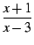
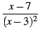

επόμενο: Άσκηση 2η
εμφάνιση: Συνάρτηση και γραφική παράσταση
προηγούμενο: Συνάρτηση και γραφική παράσταση
Πίνακας περιεχομένων
Ευρετήριο
Έστω η (πραγματική) συνάρτηση f από το  -{3} στο
που ορίζεται ως:
-{3} στο
που ορίζεται ως:
f (x) = (x + 1)ln| x - 3|.
- Υπολογίστε την πρώτη παράγωγο f'(x) και την δεύτερη
παράγωγο
f''(x) της f(x).
- Υπολογίστε τα όρια της f'(x) στο -
 και στο 3 από αριστερά.
και στο 3 από αριστερά.
- Αποδείξτε ότι η f'(x) μηδενίζεται μία φορά, στο σημείο
 του ανοικτού διαστήματος
] - , 3[.
Υπολογίστε το διάστημα πλάτους 0.1 που περιέχει το .
του ανοικτού διαστήματος
] - , 3[.
Υπολογίστε το διάστημα πλάτους 0.1 που περιέχει το .
- Μελετήστε το πρόσημο της f'(x) στο -{3} και συμπεράνετε τις μεταβολές της f(x).
- Σχεδιάστε την γραφική παράσταση C της f(x)
σε ορθοκανονικό σύστημα αξόνων (μονάδος 1cm).
- Υπολογίστε, σε cm2, το εμβαδόν της περιοχής
με σύνορα την καμπύλη C, τον άξονα των x
και τις ευθείες με εξισώσεις x = - 1 και x = 2.
Απαντήσεις
- Για να ορίσουμε την συνάρτηση f(x) πληκτρολογούμε:
f(x):=(x+1)*ln(abs(x-3))
Για την συνάρτηση f'(x) πρώτα πληκτρολογούμε:
f1:=function_diff(f):;
και στην συνέχεια,
f1(x)
για να πάρουμε:
ln(abs(x-3))+(x+1)/(x-3)
Άρα
f'(x) = ln(| x - 3|) + .
Τέλος, για την συνάρτηση f''(x) πρώτα πληκτρολογούμε:
f2:=function_diff(f1):;
και στην συνέχεια,
f2(x)
για να πάρουμε :
1/(x-3)+1/(x-3)+(x+1)*(-(1/((x-3)^2)))
Την τελευταία παράσταση μπορούμε να την απλοποιήσουμε πληκτρολογώντας
πρώτα:
normal(f2(x))
για να πάρουμε :
(x-7)/(x^2-6*x+9)
και στην συνέχεια την παραγοντοποιούμε, πληκτρολογώντας:
factor(f2(x))
για να πάρουμε :
(x-7)/((x-3)^2)
Άρα
f''(x) = 
- Για να βρούμε το όριο της f'(x) στο - πληκτρολογούμε:
limit(f1(x),x,-infinity)
και βλέπουμε πως είναι το +άπειρο :
+infinity
Για να πάρουμε το όριο της f'(x) στο 3 από
αριστερά πληκτρολογούμε:
limit(f1(x),x,3,-1)
και βλέπουμε πως είναι το -άπειρο:
-infinity
-
Προσέξτε πως
η f''(x) < 0 στο διάστημα
] - , 3[, με συνέπεια η
f'(x) να είναι συνεχής και φθίνουσα στο διάστημα
αυτό. Επιπλέον είδαμε στην δεύτερη ερώτηση πως οι τιμές της
f'(x) στα άκρα του διαστήματος
] - , 3[ είναι αντίθετες.
Υπάρχει λοιπόν ένα μοναδικό
στο διάστημα
] - , 3[ έτσι ώστε
f'() = 0.
Για να βρούμε την προσεγγιστική τιμή του πληκτρολογούμε:
fsolve(f1(x),x)
και βλέπουμε πως το είναι :
0.776592890991
Για να βρούμε τώρα το διάστημα πλάτους 0.1 που περιέχει το
πληκτρολογούμε:
[f1(0.7), f1(0.8)]
και παίρνουμε:
[0.0937786881525,-0.0297244578175]
Βλέπουμε λοιπόν πως f'(0.7) = f1(0.7) > 0 και
f'(0.8) = f1(0.8) < 0, και άρα
0.7 < < 0;8.
- Επειδή f''(7) = 0, βλέπουμε πως το ελάχιστο της
f'(x) στο διάστημα
]3, + [ είναι f'(7). Πληκτρολογώντας:
f1(7)
παίρνουμε:
ln(4)+2
που σημαίνει πως το ελάχιστο της f'(x) στο
]3, + [ είναι θετικό.
Άρα f'(x) > 0 εάν
x  ] - , [ ]3, + [
και f'(x) < 0 εάν
x ], 3[ και συνεπώς
η f(x) είναι αύξουσα στο
] - , [ ]3, + [ και
είναι φθίνουσα στο
], 3[.
] - , [ ]3, + [
και f'(x) < 0 εάν
x ], 3[ και συνεπώς
η f(x) είναι αύξουσα στο
] - , [ ]3, + [ και
είναι φθίνουσα στο
], 3[.
-
Για να σχεδιάζουμε την γραφική παράσταση της f(x)
και των δύο ευθειών x = - 1 και x = 2, πληκτρολογούμε:
plotfunc(f(x),x=-14..14);line(x=-1);line(x=2)
- Για να βρούμε το εμβαδόν της καθορισμένης περιοχής σε cm2
πληκτρολογούμε:
integrate(f(x),x,-1,2)
και παίρνουμε σαν αποτέλεσμα:
8*ln(4)-12+15/4
το οποίο στην συνέχεια φέρνουμε στην κανονική του μορφή πληκτρολογώντας:
normal(8*ln(4)-12+15/4))
για να πάρουμε:
8*ln(4)-33/4
Άρα το ζητούμενο εμβαδόν είναι
(8*ln(4) - 33/4)cm2;
επόμενο: Άσκηση 2η
εμφάνιση: Συνάρτηση και γραφική παράσταση
προηγούμενο: Συνάρτηση και γραφική παράσταση
Πίνακας περιεχομένων
Ευρετήριο
Βιβλιογραφία του giac από τους Renee De Graeve, Bernard Parisse και Bernard Ycart
Μετάφραση στα Ελληνικά : Γιώργος Νασόπουλος. Διασκευή : Αλκιβιάδης Γ. Ακρίτας